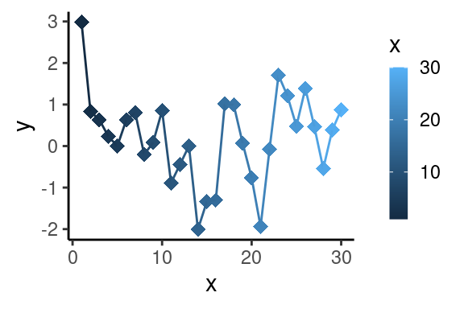
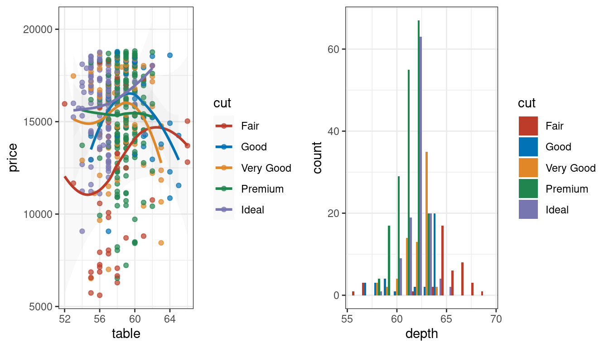
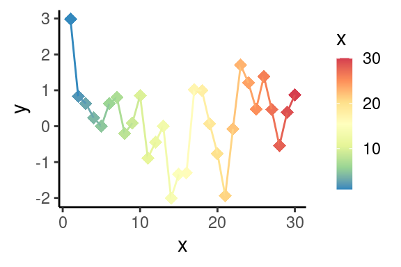
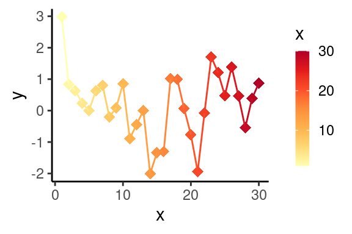
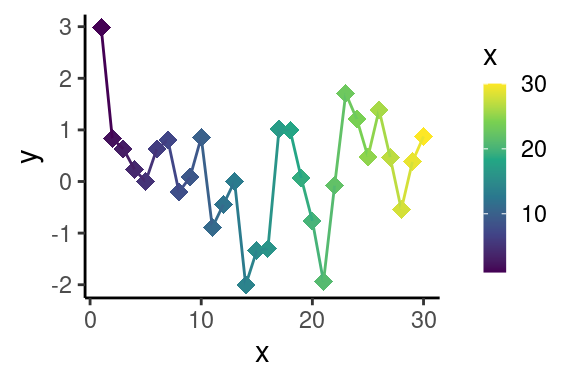
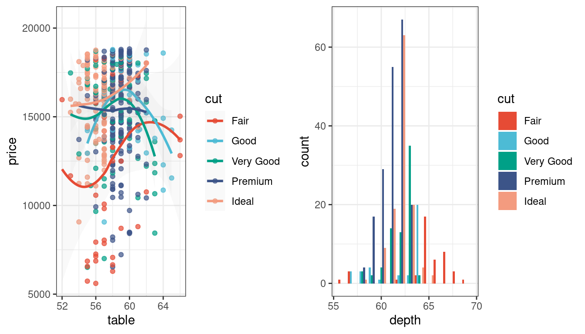
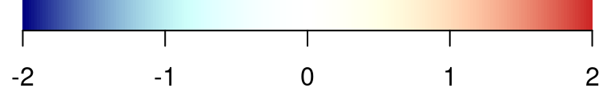

Chapter 3 colors
3.1 1.ggplot2 常用的渐变色
library(ggplot2)
set.seed(202201)
p1=ggplot(data.frame(x=1:30, y=rnorm(30)), aes(x,y, color=x))+
geom_point(size=3, shape=18)+
geom_line(size=0.5)+
theme_classic()+theme(
legend.key.width = unit(3, "mm"),
legend.key.height = unit(5, "mm")
)
p1
#亮丽彩虹色
p1+scale_color_gradientn(colours =rainbow(30))
#红蓝渐变 p1+scale_color_gradient(low = "blue", high = "red")
#红白蓝渐变scale_color_gradient2(low = "red", mid = "white", high = "blue")
#复古彩虹色
p1+scale_color_distiller(palette = "Spectral")
#红黄渐变色
p1+scale_color_distiller(palette="YlOrRd", direction=1)
#黄绿渐变色
p1+scale_color_viridis_c()
#紫黄渐变色scale_color_viridis_d()3.2 自定义渐变色(bias 参数)
# colors for Heatmap
showColors=function(bias=1){
# 操纵渐变色的倾向性
#bias=1.5;
len=100
clist=c( colorRampPalette( c("navyblue",
"#91BFDB",
"white"),
interpolate="spline",
bias=bias )(len),
"white",
rev(colorRampPalette( c("firebrick3",
"#F9B596",
"white"),
interpolate="spline",
bias=bias )(len)) )
par(mar=c(2,0,0,0))
barplot(rep(1,length(clist)), col=clist, border = NA, space=0, axes=F, )
axis(side=1, at=seq(0, 1+2*len, length.out=5), labels = seq(-2,2,1), cex=0.2)
}
showColors(0.5)
showColors(1)
showColors(1.5)
3.3 Multi Color System
colorbar=function(colorlist, main=""){
barplot(rep(1, length(colorlist)),
col=colorlist,
border=NA, space=0, axes=F, main=main)
}
par(mar=c(0,0,1,0))
tropical <- c("darkorange","dodgerblue","hotpink","limegreen","yellow")
colorbar(tropical)springtime <- c("#f6eb7b", "#e5769e", "#b3f281", "#73a8e3", "#c184ec")
colorbar(springtime)amy <- c("#ee693f", "#b3de81", "#e8a735", "#3a5199", "#ffec5c")
colorbar(amy)cbPalette <- c("#999999", "#E69F00", "#56B4E9", "#009E73", "#F0E442", "#0072B2", "#D55E00", "#CC79A7")
colorbar(cbPalette)3.4 Single Color System
par(mar=c(0,0,1,0))
springgreen <- c("#7aa14c", "#86b251", "#a3d468", "#b7ea7b", "#cff99e")
colorbar(springgreen)cleanwater <- c("#0669a5", "#0479c1", "#038de1", "#18a5fb", "#4cbbff")
colorbar(cleanwater)